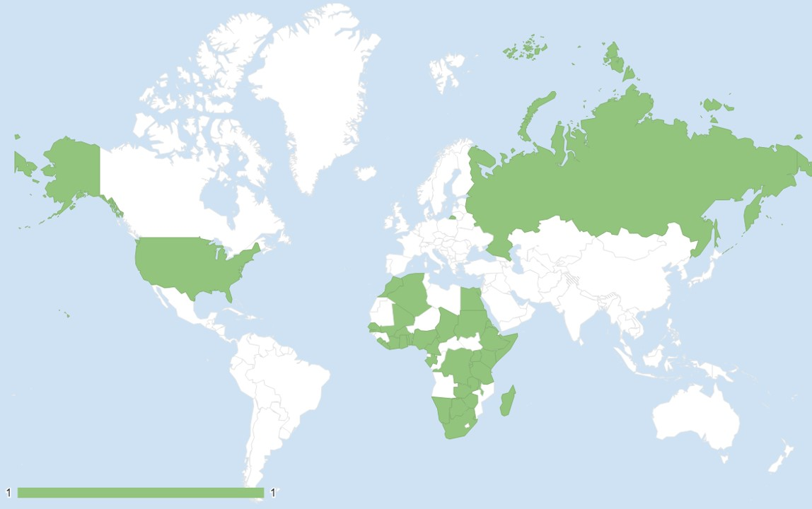
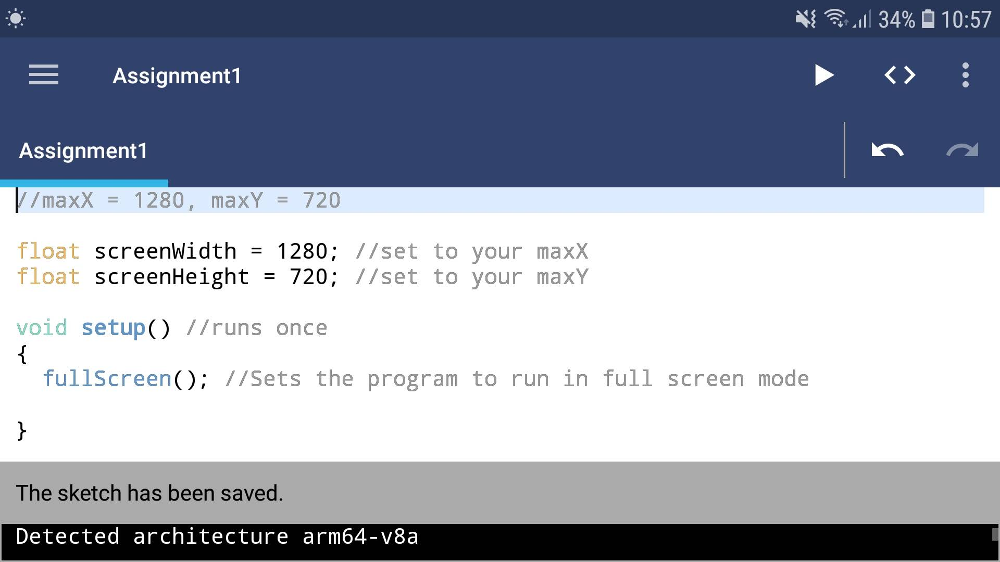
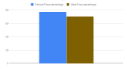

Suacode Africa
Processing Fellow, Processing Foundation. New York, USA
Mar 2019 - Jul 2019
"Sua" in Twi, a local Ghanaian language, literally means learn. Thus, SuaCode means "learn to code". Suacode is an online mobile-based coding course/system which aims to teach millions of students across Africa software programming in Processing. SuaCode was birthed out of the challenge of low computer ownership among students that was encountered during Nsesa Foundation’s annual innovation boot camp, Project iSWEST 2017. I designed, developed and led Suacode whilst working at Nsesa Foundation, and it is still growing to reach more people in Africa. In 2019, I was awarded the Processing Foundation Fellowship in New York to develop an automatic grading system and scale Suacode to over 700 students in Africa and the diaspora.
Link to publication: Interview with 2019 Fellow Prince Steven Annor
My Work
My goals during my fellowship were to:
- improve and revamp the SuaCode curriculum and course files
- develop an automated grading system for the course assignments and;
- scale the SuaCode course by running it with 700 high school and college students in different parts of the African continent in the 2nd quarter of 2019.
I started my fellowship in March with the development of the automated grading system for SuaCode,
dubbed AutoGrad, and the search for partnerships to boost awareness about the launch of the SuaCode
cohort dubbed, SuaCode Africa. I then assembled a team of four (4) developers to assist me in AutoGrad's
development whilst training a team of twelve (12) African facilitators and administrators
around the globe—Miami, Rochester, Hanover, Chicago, San Francisco in the U.S. and Accra, Kumasi in
Ghana—in preparation for the launch of SuaCode Africa. Later in April, I revamped and extended
the SuaCode system and curriculum and set up the Google Classroom course pages in preparation for SuaCode Africa.
Impact
Seven hundred and nine (709)
students all over Africa applied to take part in SuaCode Africa,
showing there is a real interest in smartphone-based coding in the region.
All 709 students that were conditionally admitted (admission into the main
program was contingent on completing the course's first two modules) were from 37
countries in Africa and the diaspora, and they were
invited to join the SuaCode Google Classroom course.
After the second module, 210 students from 27 countries were admitted
into the main program (Fig 1. below) with 25% being female.

In the main program, AutoGrad is used to fetch student assignments using the Python Google Classroom API,
grade the assignments in Processing, and provide relevant feedback electronically.
Similar to previous cohorts, students read lesson notes in the Google Classroom app and wrote
their code using the Android Processing Development Environment (APDE) application (Fig. 2).

For each assignment submission, the students included a reflection essay describing among several
things, whether the lesson and assignment were fun, challenging, etc. and the experience of coding the
assignment with their smartphones. They posted questions in the classroom forum and received help from the
facilitators and their peers.
A total completion rate of 72% was recorded with a total of 171 out of 210
students granted certificates of completion (Fig. 3).

The female pass rate (76%) was higher than the male pass rate (71%). Students who performed outstandingly had a mentoring session with a tech professional at Google.
At the end of the program, 86% agreed that the in-class exercises and assignments were helpful in understanding the material, 77% completed the final project, 91% agreed that they are interested in learning advanced concepts in Programming and 100% agreed we inspired their interest in Programming. More details are in this article.
Testimonies

"As a first-time coder I had many reservations at the beginning of the program. From day 1 the Suacode team was very hands-on in making sure that whatever we needed assistance with they helped. With every week of the program that passed, I saw myself grow to enjoy coding more and more! This was such a great experience for me and I'm certain that I'll be continuing on this journey."

"My experience at Suacode Africa was an absolute delight and a truly fulfilling experience. I joined the program with practically no knowledge of programming and left with a strong foundation in coding established. The mentors were very supportive and always made themselves available to help us in any way we needed. I felt very pleased with the end result as I was able to make my very own video game in 5 weeks time. I fully recommend the program to every newcomer to code."


"SuaCode is one of the best online training opportunities. It was my first time to learn Processing Programming Language and I am grateful for the way SuaCode has taught me the basic concepts. The learning materials were easy to follow and straight forward. I really like the way the tutors were committed to guide and aid us throughout the course. I can't wait to be invited again for Advanced Lessons in the near future."

Challenges
The challenges I faced were very variegated but they weren't unexpected.
From forming partnerships to publicize SuaCode Africa to eventually running the cohort
with a larger number of participants who speak different languages, each challenge is very
unique in its own way. Additionally, some features of the automatic grading system AutoGrad
were still under development and I had to grade many students' assignments manually.
I addressed these challenges by making use of my connections in the UAE, US, Ghana and Nigeria
to gain publicity for SuaCode. Relying on Google Translate and help from collaborators from Francophone countries,
I was able to fix the language barrier problem.
In the end, these challenges made me a better leader, programmer, instructor and researcher.
I learnt quite a lot about leading big projects, allocating funds and working with other organizations.
Generally, I have acquired a lot of experiential knowledge and broadened my perspective by leading this project.
Future Outlook
There will be three cohorts of Suacode Africa each year, the next cohort would be launched in October 2019. The team is designing an advanced coding course that would be piloted at the end of 2019 as the next step for students from Suacode Africa. We are currently doing lots of data analysis and preparing for publications on coding on smartphones and online courses. Lastly, the AutoGrad team is developing Autograd further and a new AI for the Suacode forum.